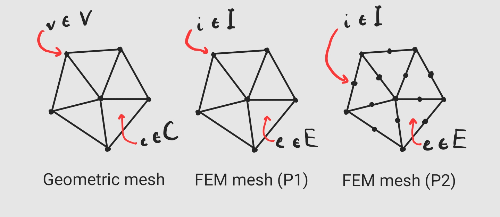
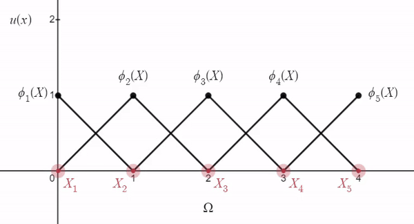

Method¶
Given some space-dependent problem whose solution \(u(X)\) is defined on some continuous domain \(\Omega\), FEM first requires a geometric mesh \((V,C) \approx \Omega\), where \(C\) is a set of cells whose vertices are in \(V\). From \((V,C)\), we then construct the FEM mesh \((I,E)\), where \(I\) is the set of FEM nodes and \(E\) is the set of FEM elements. We now assume that the geometric mesh is the domain itself \((V,C)=\Omega\).
Nodes \(i \in I\) have corresponding positions \(X_i \in \Omega\) and associated basis functions \(\phi_i(X): \Omega \longrightarrow \mathbb{R}\) such that \(\phi_i(X_j) = \delta_{ij}\), where \(\delta_{ij}\) is the Kronecker delta. Such basis functions are defined element-wise by so-called shape functions \(N_i^e(X)\) for pairs \((i,e)\) of adjacent node and element, and vanish in non-adjacent elements. In other words, the support of \(\phi_i(X)\) is the union of its adjacent elements, and evaluating \(\phi_i(X)\) amounts to finding the element \(e\) containing the evaluation point \(X\), and evaluating \(N_i^e(X)\) there. It is common to refer to this choice of basis function \(\phi_i(X)\) as the "hat" function, because its tip (i.e. its maximal value of \(1\)) is located on node \(i\), "centered" in its support, while it smoothly decreases to 0 at surrounding nodes. It is also common to refer to these elements as "PK Lagrange elements", because their shape functions \(N_i^e(X)\) are interpolating polynomials of degree \(K\).
|  |
|---|
| Geometric mesh (left) versus FEM meshes discretized with linear (middle) and quadratic (right) Lagrange elements. |
With \(n=|I|\), FEM restricts \(u(X)\) to the class of functions \(u(X) = \sum_{i=1}^{n} u_i \phi_i(X)\), i.e. linear combinations of coefficients \(u_i\) and basis functions \(\phi_i\) associated with nodes \(i\). More compactly, \(u(X) = \Phi^T u\), where \(u = \begin{bmatrix}u_1 & \dots & u_{n} \end{bmatrix}^T \in \mathbb{R}^{n}\) and \(\Phi = \begin{bmatrix} \phi_1(X) & \dots & \phi_{n}(X) \end{bmatrix}^T \in \mathbb{R}^{n}\). We say that the basis functions \(\phi_i\) span the function space \(\{ \Phi^T u \;\forall\; u \in \mathbb{R}^{n} \}\), much like basis vectors \(v_i\) span vector spaces \(V\). Functions in the FEM function space, i.e. the space spanned by \(\phi_i\), are uniquely represented by their vector of coefficients \(u\), much like vectors \(v = v_1 \overrightarrow{i} + v_2\overrightarrow{j} + v_3 \overrightarrow{k}\) in \(\mathbb{R}^3\) are uniquely represented by their coefficients \(\begin{bmatrix} v_1 & v_2 & v_3 \end{bmatrix}\).
|  |
|---|
| FEM function space in 1D using linear "hat" basis functions. |
Such a discrete functional representation allows one to accurately map continuous problems from theory onto computers by needing only to store the discrete and finite-dimensional coefficients \(u\) and FEM mesh \((I,E)\), assuming an appropriate geometric meshing of the problem domain is readily available. Furthermore, the linearity of \(u(X)\) w.r.t. \(\Phi\) naturally translates solving FEM-discretized problems into solving matrix equations.
Summary¶
Basis functions \(\phi_i(X)\) are constructed piece-wise in mesh elements \(e\) adjacent to node \(i\) via element shape functions \(N_i^e(X)\). To evaluate \(\phi_i(X)\), we find element \(e\) adjacent to node \(i\) containing point \(X\), and evaluate \(N_i^e(X)\). The shape functions are polynomials which depend on the geometry of their associated element, and we compute them by inverting a matrix \(P^T\) of polynomials evaluated at element \(e\)'s nodes. To avoid ill-conditioning of the matrix inversion problem, we instead define a reference element that is well-conditioned, and construct reference shape functions \(N_l(\xi)\) there. Evaluating our basis functions in the domain then amounts to \(\phi_i(X) = N_i^e(X) = N_l(\xi(X))\), where \(\xi(X)\) is the inverse map taking domain positions \(X\) to reference positions \(\xi\), as opposed to the map \(X(\xi)\) which takes reference positions to domain positions. Gradients of basis functions can be computed by carrying out the chain rule of differentiation through \(N_l(\xi)\) and \(\xi(X)\). The specific placement of nodes and the associated basis polynomials in reference space defines the type of an FEM element. We present the classic Lagrange element as a simple yet popular choice.
Because functions discretized on an FEM mesh have a linear combination structure \(u(X) \approx \Phi^T u\), and \(u\) is a simple vector of constant (with respect to \(X\)) coefficients, differential operators \(D(\cdot)\) applied to \(u(X)\) need only be applied to the basis functions \(\phi_i(X)\) by linearity. In other words, \(L(u(X)) = \sum_i u_i L(\phi_i(X))\). Hence, the gradient \(\nabla u(X)\), for example, amounts to \(\sum_i u_i \nabla \phi_i(X)\), where we have shown how to evaluate \(\nabla \phi_i(X)\). The same applies to other differential operators, such as \(\Delta, \nabla^2, \nabla \cdot, \int \partial\), etc.
Motivation¶
As a motivating example, consider a well-known partial differential equation (PDE), the Poisson equation,
defined on some domain \(\Omega\), where \(\Delta\) is the Laplacian and \(f(X)\) is some known function in space. In other words, we wish to solve for some function \(u(X)\) whose Laplacian is given by \(f(X)\) everywhere in \(\Omega\) (i.e. \(\;\forall\; X \in \Omega\)). Without further analytical specification on the domain \(\Omega\), there is little we can do to solve such a general problem. In fact, most domains that we care about and that appear in real life don't have an analytical description. Even if we did have such a description of the domain, it might still be very hard to solve such a problem by hand. We do, however, have powerful meshing tools which can take human-authored complex geometry as input, and produce meshes that accurately approximate the domain as output.
...